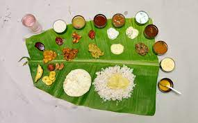
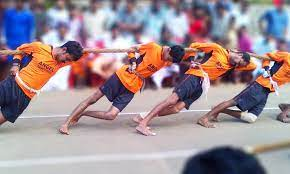
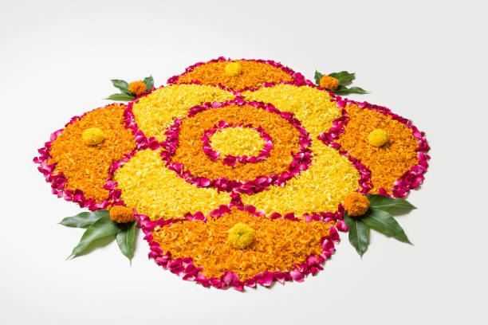
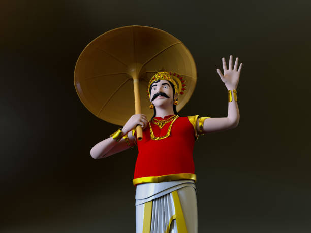
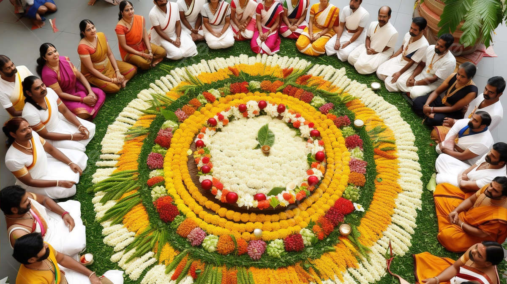
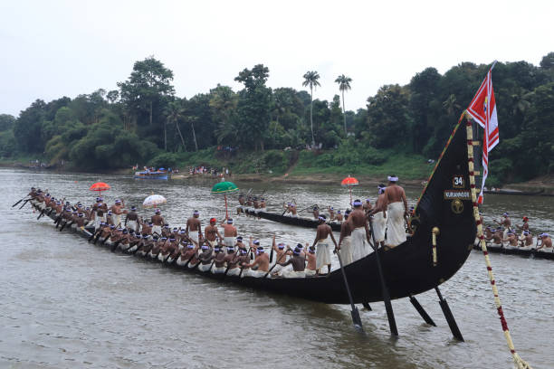

NAMHSS
Peringathur
Presents
"The celebration of Onam calls to mind the treasured legacy of a life of equality, oneness and prosperity and enlivens every home with the ethereal joy of festivity."
Let the Onam festivities begin!
What We Present?
Our Programmes

Special Sadya
 Sack Race
Sack Race
 Lemon Spoon
Lemon Spoon

Vadam Vali
 Musical Chair
Musical Chair
Bottle Filling
About Onam
Onam
Onam is celebrated all over the state of Kerala, Onam is the most popular festival of Malayalis.
Spanning over ten days, Onam starts on Atham day and lasts till Thiru Onam or Thiruvonam,
meaning sacred Onam day. This unique festival brings the colours and cultures of the state
into the limelight, when people across Kerala prepare to have a grand time. On the first day,
a street parade is organised that sees caparisoned elephants, carnival floats, brightly dressed
dancers and musicians, and various other artistes. Onam is popularly called the festival of
flowers, when Pookalam (a drawing created with flowers on
the floor) is made. This is usually done in front of doors and gates of temples. One of the most
attractive features of Onam is Pulikali or the play of the tiger.
Behind Onam
History
According to the Hindu Mythology, King Mahabali was a great, generous ruler of Kerala.
In his reign, the kingdom grew prosperous and peaceful. Everyone were happy and everyone
used to love their King. Eneny of demons, Devtas (gods of heaven) sent Lord Vishnu to end
the rule of Mahabali on the earth. Lord Vishnu appeared as Vamana Avatar and asked for three
feet of land from Mahabali. Lord Vishnu measured all the worlds in two steps and asked Mahabali
for a place to put his third step. Mahabali requested Vamana to place his foot on his head.
Lord Vishnu got pleased by Mahabali and ordered him to rule till the end of Kali Yuga, Lord
Vishnu blessed Mahabali with a boon that he would be able to visit his kingdom once in a year.
So every year people of his kingdom (Kerala), celebrate this Onam festival as the day of home
coming of their loving king Mahabali.
Read More
Gallery
Portfolio

Flower Carpet

Maveli
 Special Rice
Special Rice
 Tiger Dance
Tiger Dance

Flower Carpet

Boat Race